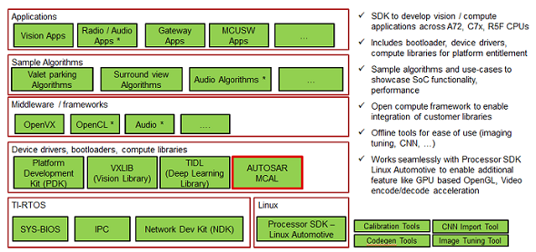

|
MCUSW
|
|
MCUSW
|
SoC's such as J721E/J7200/J721S2/J784S4/AM62X/AM62A/AM62P/J722S integrate an MicroController Unit Subsystem (MCU SS) as an chip-in-chip. It operates using a separate voltage supply, clock sources and resets and includes the components needed for device management. This allows the MCUSS to function continuously regardless of the state of the rest of the device. MCU SS has one or more DUAL core Cortex R5F (number of instances varies on the variant of the device, please refer the device reference manual)
MCUSW consists of two main components, Microcontroller abstraction layer (MCAL) & Demonstration applications (MCUSS Demos). Its is expected to be hosted on Cortex R5F 0 in MCU Domain or other Cortex R5F in main domain. The table below lists SoC/Cores on which MCUSW can be hosted.
| Device Family | Devices | Also known by other names |
|---|---|---|
| Jacinto | J721E | AM752X, DRA829, TDA4VM, J7ES |
| Jacinto | J7200 | DRA821, J7VCL |
| Jacinto | J721S2 | DRA820, TDA4VL, J7AEP |
| Jacinto | J784S4 | TDA4VH, TDA4AH, J7AHP |
| Sitara MPU | AM62AX | - |
| Sitara MPU | AM62X | - |
| Sitara MPU | AM62P | - |
| Sitara MPU | J722S | J7AEN |
| SoC Family | Cores Names | Referred as | Comments |
|---|---|---|---|
| J721E | MCU R5F Core 0 | mcu 1 0 | Please refer the "mcusw_release_notes.html" to determine if this release supports this platform. Note that all computing cores might not be supported in MCUSW |
| MCU R5F Core 1 | mcu 1 1 | ||
| 1ST MCU Core 0 | mcu 2 0 | ||
| 1ST MCU Core 1 | mcu 2 1 | ||
| 2ND MCU Core 0 | mcu 3 0 | ||
| 2ND MCU Core 1 | mcu 3 1 | ||
| A72 Core 0 | mpu 1 0 | ||
| A72 Core 1 | mpu 1 1 | ||
| 1ST C66X DSP | c66x_1 | ||
| 2ND C66X DSP | c66x_2 | ||
| C7X DSP | c7x_1 | ||
| J7200 | MCU R5F Core 0 | mcu 1 0 | Please refer the "mcusw_release_notes.html" to determine if this release supports this platform. Note that all computing cores might not be supported in MCUSW |
| MCU R5F Core 1 | mcu 1 1 | ||
| 1ST MCU Core 0 | mcu 2 0 | ||
| 1ST MCU Core 1 | mcu 2 1 | ||
| A72 Core 0 | mpu 1 0 | ||
| A72 Core 1 | mpu 1 1 | ||
| J721S2 | MCU R5F Core 0 | mcu 1 0 | Please refer the "mcusw_release_notes.html" to determine if this release supports this platform. Note that all computing cores might not be supported in MCUSW |
| MCU R5F Core 1 | mcu 1 1 | ||
| 1ST MCU Core 0 | mcu 2 0 | ||
| 1ST MCU Core 1 | mcu 2 1 | ||
| A72 Core 0 | mpu 1 0 | ||
| A72 Core 1 | mpu 1 1 | ||
| J784S4 | MCU R5F Core 0 | mcu 1 0 | Please refer the "mcusw_release_notes.html" to determine if this release supports this platform. Note that all computing cores might not be supported in MCUSW |
| MCU R5F Core 1 | mcu 1 1 | ||
| 1ST MCU Core 0 | mcu 2 0 | ||
| 1ST MCU Core 1 | mcu 2 1 | ||
| A72 Core 0 | mpu 1 0 | ||
| A72 Core 1 | mpu 1 1 | ||
| AM62AX/AM62P | MCU R5F Core 0 | mcu 0 0 | Please refer the "MCAL_SitaraMPU_release_notes.html" to determine if this release supports this platform. Note that all computing cores might not be supported in MCUSW |
| AM62X | DM R5F Core 0 | mcu 0 0 | Please refer the "MCAL_SitaraMPU_release_notes.html" to determine if this release supports this platform. Note that all computing cores might not be supported in MCUSW |
| J722S | MCU R5F Core 1 | mcu 0 0 | Please refer the "mcusw_release_notes.html" to determine if this release supports this platform. Note that all computing cores might not be supported in MCUSW |
In case of Jacinto, MCUSW is a part of Jacinto Processor SDK RTOS(PSDKRA) package.
In case of Sitara MPU, MCUSW is released seperatly and is not part of SDK.
Demonstrates usage of various drivers / software provided for MCU SS. These applications could employ FREERTOS as OS and use MCAL and/or PDK drivers.
Please note, these demos are currently not supported on Sitara MPU Family of Devices.
Listed below are application supported, demo specific pages list the supported SoC/Cores
| Demo | Comments | Refer | J721E | J7200 | J721S2 | J784S4 |
|---|---|---|---|---|---|---|
| Can Profiling | Application to determine the CPU load for transmission & reception of CAN messages | (CAN Profiling Application) | Yes | Yes | Yes | Yes |
| CDD IPC Profiling | Application to determine the time required for transmission & reception of messages of various sizes | (CDD IPC Profiling Application) | Yes | Yes | No | No |
| Execute In Place (XIP) - Can Response Demo | Application demonstrates operating MCU Domain R5F (MCU 1 0) in XIP mode | (Execute In Place (XIP) Application) | Yes | Yes | No | No |
| Multi-Core Boot Application | Application demonstrates Booting of all cores from MCU R5F (MCU 1 0) while simultaneously sending out CAN messages | (CAN Response Application) | Yes | Yes | No | No |
| Mode Switch Application | This application demonstrates steps to switch mode from ACTIVE (full SoC powered ON) to MCU Only mode and then from MCU Only to ACTIVE mode on J721E EVM. | (Mode Switch Application) | Yes | No | No | No |
| XIP FOTA | This application demonstrates execute-in-place, where in CAN Profiling Application is executed from OSPI memory. | (Execute In Place (XIP) + Firmware Over The Air (FOTA) Application) | Yes | Yes | Yes | Yes |
MCAL is the lowest layer of the AUTOSAR Basic Software architecture. MCAL contains drivers with direct access to the μC internal peripherals. MCAL is a hardware specific layer that ensures a standard interface to the Basic Software.
This user guide details procedure that are common to all MCAL drivers, please refer driver specific user guide for finer details of driver.
For Jacinto Family of Devices:

| Driver | Comments | Refer | Supported SoC | Supported Cores |
|---|---|---|---|---|
| Adc | Driver for built-in Adc peripheral | (Adc User Guide) | J721E | MCU 1 0, MCU 2 1, MCU 2 0*, MCU 3 0* |
| J7200 | MCU 1 0, MCU 2 1 | |||
| J721S2 | MCU 1 0, MCU 2 1 | |||
| J784S4 | MCU 1 0, MCU 2 1 | |||
| Can | Driver for built-in CAN peripheral | (Can User Guide) | J721E | MCU 1 0, MCU 2 1, MCU 2 0*, MCU 3 0* |
| J7200 | MCU 1 0, MCU 2 1 | |||
| J721S2 | MCU 1 0, MCU 2 1 | |||
| J784S4 | MCU 1 0, MCU 2 1 | |||
| AM62X/AM62AX/AM62P/J722S | MCU 0 0 | |||
| Cdd Ipc | Driver for inter-processor communication | (Cdd Ipc User Guide) | J721E | MCU 2 1, MCU 2 0*, MCU 3 0* |
| J7200 | MCU 2 1 | |||
| J721S2 | MCU 1 0, MCU 2 1 | |||
| J784S4 | MCU 1 0, MCU 2 1 | |||
| AM62X/AM62AX/AM62P/J722S | MCU 0 0 | |||
| Eth | Driver for built in CPSW 2G port | (Eth & EthTrcv User Guide) | J721E | MCU 1 0 |
| J7200 | MCU 1 0 | |||
| J721S2 | MCU 1 0 | |||
| AM62X/AM62AX/AM62P/J722S | MCU 0 0 | |||
| Eth Virt Mac | Driver for external Flash Device | (Eth & EthTrcv User Guide) | J721E | MCU 2 1 |
| J7200 | MCU 2 1 | |||
| J721S2 | MCU 2 1 | |||
| EthTrcv | Driver for Ethernet Transceiver and tested with DP83867 | (Eth & EthTrcv User Guide) | J721E | MCU 1 0 |
| J7200 | MCU 1 0 | |||
| J721S2 | MCU 1 0 | |||
| AM62X/AM62AX/AM62P/J722S | MCU 0 0 | |||
| Fls | Driver for external Flash Device | (Fls User Guide) | J721E | MCU 1 0, MCU 2 1 |
| J7200 | MCU 1 0, MCU 2 1 | |||
| J721S2 | MCU 1 0, MCU 2 1 | |||
| J784S4 | MCU 1 0, MCU 2 1 | |||
| AM62X/AM62AX/AM62P/J722S | MCU 0 0 | |||
| Gpt | Driver for General purpose timer | (Gpt User Guide) | J721E | MCU 1 0, MCU 2 1, MCU 2 0*, MCU 3 0* |
| J7200 | MCU 1 0, MCU 2 1 | |||
| J721S2 | MCU 1 0, MCU 2 1 | |||
| J784S4 | MCU 1 0, MCU 2 1 | |||
| AM62X/AM62AX/AM62P/J722S | MCU 0 0 | |||
| Pwm | Driver for Pulse-width-Modulation, uses built-in General purpose timer | (Pwm User Guide) | J721E | MCU 1 0, MCU 2 1, MCU 2 0*, MCU 3 0* |
| J7200 | MCU 1 0, MCU 2 1 | |||
| J721S2 | MCU 1 0, MCU 2 1 | |||
| J784S4 | MCU 1 0, MCU 2 1 | |||
| Pwm | Driver for Pulse-width-Modulation, uses built-in enhanced PWM(ehrPwm) | (Pwm User Guide) | J721E | MCU 1 0, MCU 2 1, MCU 2 0*, MCU 3 0* |
| J7200 | MCU 1 0, MCU 2 1 | |||
| J721S2 | MCU 1 0, MCU 2 1 | |||
| J784S4 | MCU 1 0, MCU 2 1 | |||
| Spi | Driver for Serial Peripheral Interface | (Spi User Guide) | J721E | MCU 1 0, MCU 2 1, MCU 2 0*, MCU 3 0* |
| J7200 | MCU 1 0, MCU 2 1 | |||
| J721S2 | MCU 1 0, MCU 2 1 | |||
| J784S4 | MCU 1 0, MCU 2 1 | |||
| AM62X/AM62AX/AM62P/J722S | MCU 0 0 | |||
| Dio | Driver for control of GPIO | (Dio User Guide) | J721E | MCU 1 0, MCU 2 1, MCU 2 0*, MCU 3 0* |
| J7200 | MCU 1 0, MCU 2 1 | |||
| J721S2 | MCU 1 0, MCU 2 1 | |||
| J784S4 | MCU 1 0, MCU 2 1 | |||
| AM62X/AM62AX/AM62P/J722S | MCU 0 0 | |||
| Wdg | Driver for built in WWDT(Windowed Watchdog Timer) | (Wdg User Guide) | J721E | MCU 1 0, MCU 2 1, MCU 2 0*, MCU 3 0* |
| J7200 | MCU 1 0, MCU 2 1 | |||
| J721S2 | MCU 1 0, MCU 2 1 | |||
| J784S4 | MCU 1 0, MCU 2 1 | |||
| AM62X/AM62AX/AM62P/J722S | MCU 0 0 | |||
| Icu | Driver for built in ICU (ECAP hardware) | (Icu User Guide) | J721E | MCU 1 0, MCU 2 1 |
| J7200 | MCU 1 0, MCU 2 1 | |||
| J721S2 | MCU 1 0, MCU 2 1 | |||
| J784S4 | MCU 1 0, MCU 2 1 | |||
| Mcu | Driver for built in MCU (CLOCK hardware) | (Mcu User Guide) | J721E | MCU 1 0, MCU 2 1 |
| J7200 | MCU 1 0, MCU 2 1 | |||
| J721S2 | MCU 1 0, MCU 2 1 | |||
| J784S4 | MCU 1 0, MCU 2 1 | |||
| AM62X/AM62AX/AM62P/J722S | MCU 0 0 |
Dependencies can be categorized as listed below. Please note that depending on the intended use, the dependencies vary (e.g. for integration vs running demo applications only)
Please refer to the Jacinto and Sitara MPU Device SDK User Guides for Hardware Boot Mode details.
Jacinto and Sitara MPU Device EVMs includes an on-board XDS110 USB emulator, which could be used with CCS. Please refer to ti.com or contact your FAE for documents describing the EVM.
An external emulator such as Spectrum Digital XDS560V2 could be used, all steps remain identical to steps listed in (Built in emulator) with creation of Target Configuration being the exception.
While creating the target, please select the emulator that is being used.
MCUSW is delivered as part of SDK. All SW dependencies will be part of the SDK packaging. Please refer to release notes per release for updated information on supported Compilers.
"PDK" is a component within PSDKRA. Following section list the sub-components of PDK that are used / required by MCAL modules.
Please check release note that came with this release for the compatible version of PDK/SDK
UDMA is used to move data between peripherals and memory.
The table below lists each module dependencies on PDK components
| MCAL | CSL | UDMA PDK Library | SCIClient (Only MCAL Examples) | IPC Baremetal |
|---|---|---|---|---|
| Adc | NO | NO | YES | NO |
| Can | NO | NO | YES | NO |
| CddIpc | NO | NO | YES | NO |
| Dio | NO | NO | YES | NO |
| Eth | NO | NO | YES | YES |
| Fls | NO | NO | YES | NO |
| Gpt | NO | NO | YES | NO |
| Pwm | NO | NO | YES | NO |
| Spi | NO | YES | YES | NO |
| Wdg | NO | NO | YES | NO |
| Icu | NO | NO | YES | NO |
| Mcu | NO | NO | YES | NO |
Please refer to release notes for updated information on supported Compilers.
Get required MCU Plus SDK release version from below locations, and place it in same location as mcusw folder.
This is required for building and validating MCAL Applications.
Elektrobit Tresos (EB) is used to configure the MCAL modules, please refer (MCAL Configurator User Guide) for details.
This tool would be required to re configure the MCAL modules provided by TI.
Code Composer Studio is an integrated development environment (IDE) that supports TI's Microcontroller and Embedded Processors portfolio.
Please refer to Release Notes to find the supported CCS Version. Please refer to SDK User Guides for CCS Setup instructions.
 1.8.15
1.8.15